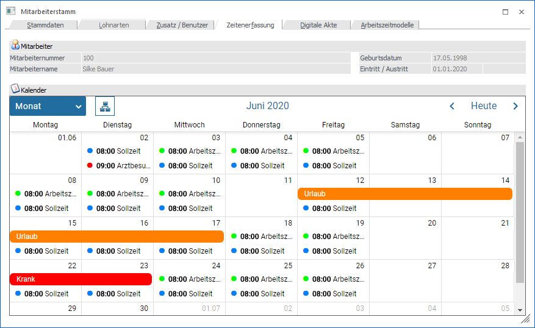
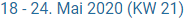
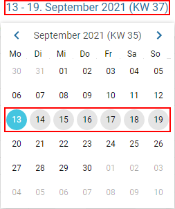
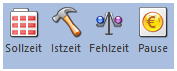

In dem Register "Zeitenerfassung" werden die Fehlzeiten des Mitarbeiters in Form einer Kalenderansicht angezeigt.

Folgende Informationen stehen zur Verfügung:
Mitarbeiter

Ø Mitarbeiternummer / Mitarbeitername / Geburtsdatum / Eintritt / Austritt
Im oberen Teil des Fensters werden Daten des Mitarbeiters, welche gerade bearbeitet wird angezeigt.
Kalender
Standardmäßig wird der aktuelle Monat in der Monatsübersicht angezeigt, wobei im Kalender der aktuelle Tag entsprechend farblich hervorgehoben ist. Die Ansicht des Kalenders kann umgestellt werden, wobei es folgende Möglichkeiten gibt:
Ø Ansicht
Mit Hilfe einer Auswahlliste kann entschieden werden, in welcher Ansicht der Kalender dargestellt werden soll, wobei die folgenden Einstellungen zur Verfügung stehen:
ü Tag
ü Woche
ü Arbeitswoche
ü Monat
ü Jahr
ü Agenda
Ø Gruppierung
Durch Anwahl dieses Button kann eine Gruppierung auf den Mitarbeiter erfolgt. D.h. alle Kalendereinträge werden in Form eines Zeitstrahls dargestellt.
Hinweis
Da im Kalender immer nur die Daten des aktuelle Mitarbeiters angezeigt werden ist die gruppierte Ansicht in der Regel hier nicht zielführend.
Ø

Zeitraum / KalenderIn der Mitte des Kalenders wird der aktuell dargestellte Zeitraum ausgegeben. Durch Anwahl dieser Information wird ein Minikalender zur schnellen Navigation geöffnet. Der aktuelle Tag wird in hellblau und die aktuelle Woche in grau dargestellt.
Beispiel

Ø Navigation
Mit Hilfe der Navigation-Buttons kann - je nach Ansicht - zwischen den Tagen / Wochen / Monaten / Jahren geblättert werden.
Ø Heute
Durch Anwahl des Buttons "Heute" wird - je nach Ansicht - auf den aktuellen Tagen / die aktuelle Woche / den aktuellen Monat / das aktuelle Jahr gewechselt.
Buttons

Ø Sollzeit / Istzeit / Fehlzeit / Pause
Über diese Buttons können im Kalender die Zeitartentypen ein- und ausgeblendet werden.